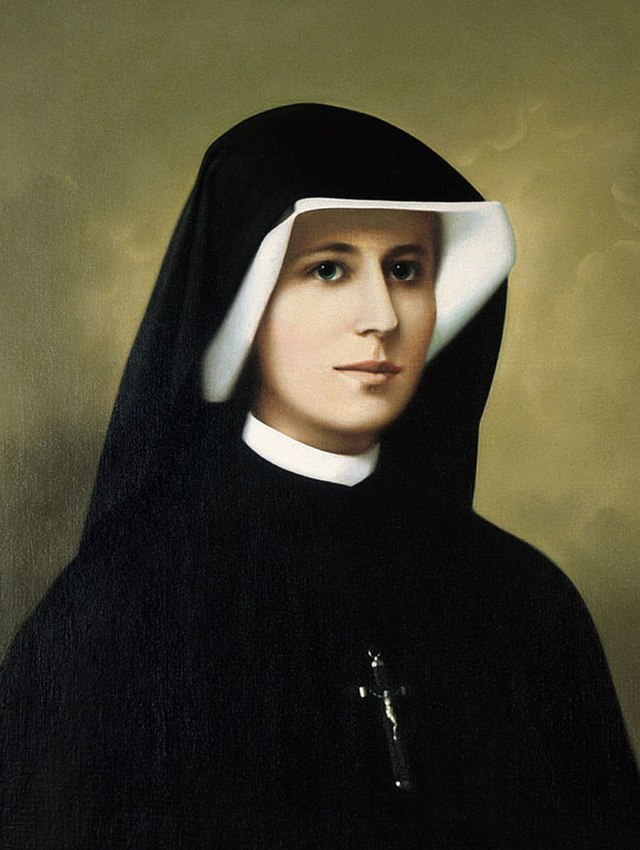
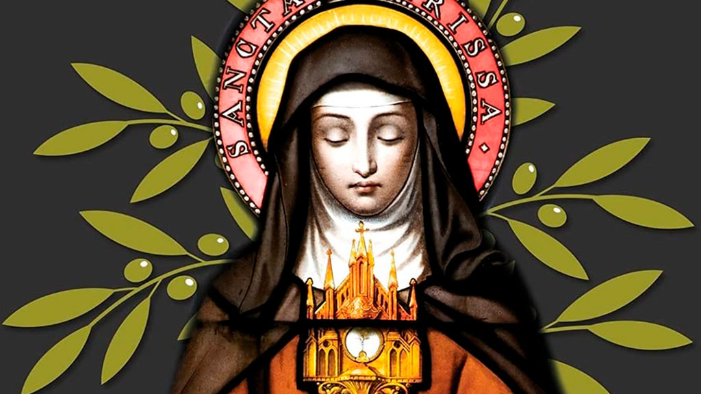
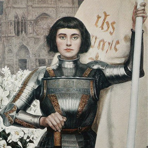
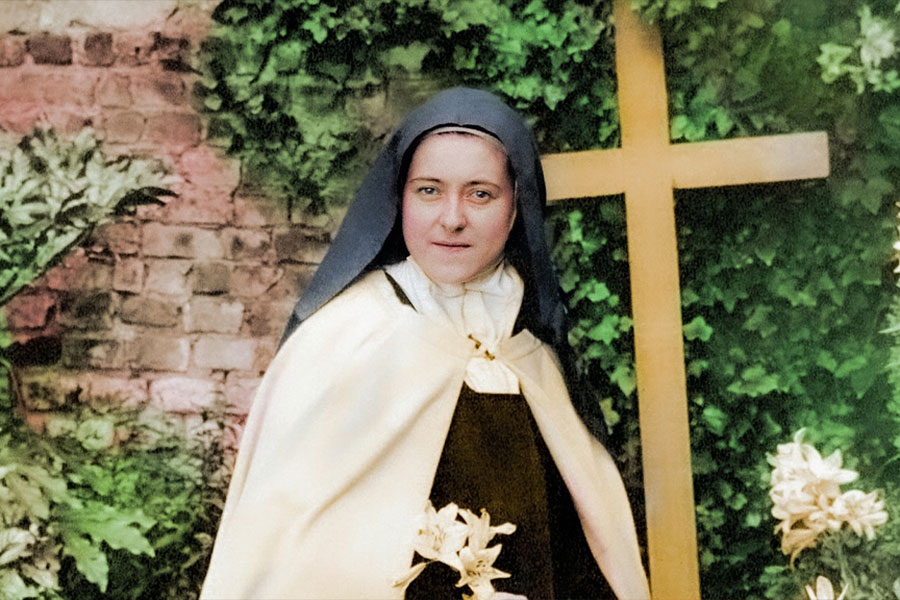
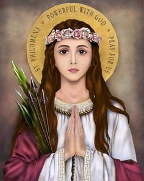
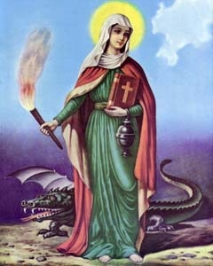
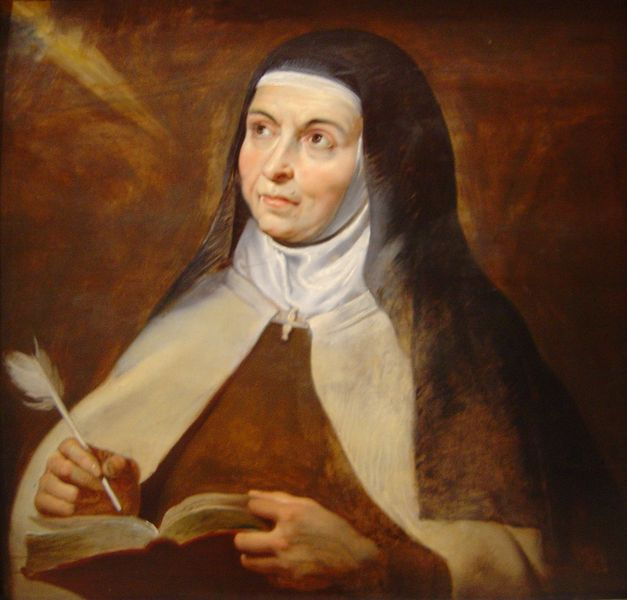
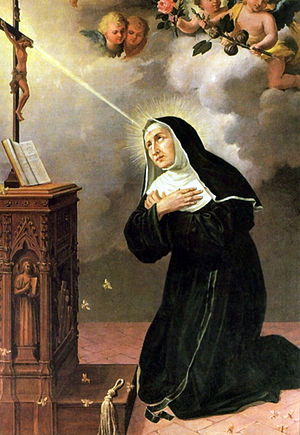

Santa Faustina
(1905 - 1938)
Santa Faustina nasceu no povoado de Glogowiec, na Polônia, no dia 25 de agosto de 1905. É a terceira de dez filhos, nasceu numa pobre e piedosa família de aldeões. Recebeu o nome de Helena Kowalska e, desde a infância, distinguiu-se pela piedade, pelo amor à oração pela diligência e obediência, e ainda por uma grande sensibilidade às misérias humanas. Não chegou a concluir o 4º ano do ensino fundamental. Com dezesseis anos, foi trabalhar como empregada doméstica para ajudar seus familiares. A vida espiritual de Helena começou cedo. Quando tinha apenas 7 anos, ouviu, pela primeira vez, a voz de Deus na sua alma. Embora tivesse o ardente desejo de entregar-se inteiramente a Cristo em uma congregação religiosa, seus pais se opuseram, pois não possuíam recursos para lhe dar o dote necessário, estavam muito endividados e eram muito ligados à filha.
Santa Clara
(1194 - 1253)
Santa Clara de Assis, (Chiara D’Offreducci), nasceu no ano de 1194, em Assis, Itália. De família rica, seu pai, Favarone Scifi, era conde. Sua mãe se chamava Hortolana Fiuni. Clara era neta e filha de fidalgos (pessoas da classe nobre). Sua família vivia em um palácio na cidade, tinha muitas propriedades e até um castelo. Clara tinha dois irmãos e duas irmãs. Suas irmãs Catarina e Beatriz, mais tarde, iriam entrar para o convento junto com sua mãe, após esta ficar viúva. Quando Clara tinha por volta de doze anos, sua família vai morar em Corozano e depois vão para Perugia, refugiando-se de uma revolução.
Santa Joana D'arc
(1412 - 1431)
No dia 30 de maio de 1431, a jovem francesa Joana D’Arc, nascida na comuna de Domrémy-la-Pucelle, foi queimada em praça pública ao ser acusada de heresia e feitiçaria por um tribunal eclesiástico inglês e francês. Na época, ela tinha somente 19 anos. Muitos anos se passaram e a história de Joana D’Arc, heroína que garantiu substanciais vitórias ao exército francês durante a Guerra dos Cem Anos (1337 – 1453), foi revisitada, reconsiderada e, hoje, ela é tida como a Santa Padroeira da França.
Santa Teresinha
(1873 - 1897)
Santa Tereza do Menino Jesus nasceu no dia 2 de janeiro de 1873 em Alençom, baixa Normandia, na França. Desde o nascimento foi fraca e doente. Seu nome de batismo era Marie Françoise Thérèse Martin (Maria Francisca Tereza Martin). Filha de Louis Martim, relojoeiro e joalheiro, que quis ser monge na ordem de São Bernardo de Claraval, e Zélie Guérin, famosa bordadeira do ponto de Alençon. Sua mãe faleceu quando Terezinha tinha apenas quatro anos. Por isso, a menina se apegou à sua irmã mais velha, Paulina, que passou a ser tida por ela como segunda mãe. Paulina, porém, seguindo a própria vocação, entrou para o Carmelo. Terezinha ficou muito doente causando grande preocupação em seu pai e irmãs. Um dia, porém, olhando para a imagem da Imaculada Conceição de Maria, de quem seus pais eram devotos, a Virgem sorriu para Terezinha e esta ficou curada. Desse dia em diante, Terezinha decidiu entrar para o Carmelo. Suas irmãs, que também se tornaram freiras, eram Maria, Paulina, Leônia e Celina. Seus 3 irmãos morreram muito cedo. Terezinha estudou no colégio da Abadia das monjas beneditinas de Lisieux por 5 anos.
Santa Filomena
(1831 - 1846)
Segundo os relatos dos historiadores da vida de Santa Filomena, havia na Grécia um rei cuja descendência de filhos não existia, pois sua esposa, estéril, já tinha abdicado da maternidade. Assim a sucessão ao trono, deixava de existir pela ausência de filhos. No reinado, porém, um médico cristão e considerado praticamente e seguidos do evangelho, convenceu a família do rei, que era considerado ateu, a se converter ao cristianismo, O médico sugeriu que fizessem um pedido a Jesus Cristo para lhes fazer um milagre de se tornarem pais. A graça da conversão e generosidade de Deus a essa família foi a chegada de um bebê, menina que nasceu em 10 de agosto sob intensa alegria e admiração da mãe e pai que exultavam o milagre. O nome dado a menina foi LUMENA. O significado desse nome é “Luz da Fé”, Realmente tinha sido uma luz na vida do casal. Na sequencia dos fatos, chegou o dia do batismo da Lumena. E o nome FILO foi acrescentado a Lumena, se tornando FILOMENA.
Santa Marta
(Unknown - C.80)
Marta é contemporânea de Jesus. Ela é mencionada treze vezes nos Evangelhos. Era irmã de Lázaro, grande amigo de Jesus e de Maria, aquela que se sentava aos pés do Mestre para ouvi-lo. A família de Marta vivia no vilarejo de Betânia, a três quilômetros de Jerusalém. A casa e Marta era um verdadeiro local de descanso para Jesus e seus discípulos. Convivendo com o Mestre, ouvindo-o e servindo-o, Marta conheceu o Reino dos céus. Ela presenciou a ressurreição de seu irmão Lázaro, operada por Jesus, quatro dias após sua morte.
Santa Teresa De Ávila
(1515 - 1582)
Tereza de Cepeda e Ahumada, nasceu em Ávila, Espanha, no ano de 1515. Filha de Alonso Sanches de Cepeda e Beatriz Dávila e Ahumada. Teve educação esmerada e muito cuidada pelos pais. Gostava de ler histórias de santos, chegando a fugir de casa com seu irmão para dar a vida por Cristo tentando evangelizar os mouros. Sua mãe faleceu quando Tereza tinha 14 anos. Então, seu pai a levou para estudar no Convento das Agostinianas de Ávila. Quando leu as "Cartas" de São Jerônimo, disse a seu pai que iria se tornar religiosa. Seu pai não queria, mas com 20 anos ela "fugiu" para o Convento Carmelita de Encarnacíon, em Ávila.
Santa Rita de Cássia
(1381 - 1457)
Santa Rita de Cássia era filha única. Nasceu em maio do ano de 1381, nas montanhas em Roccaporena, perto de Cássia, região da Umbria, Itália. Era filha de Antônio Mancini e Amata Ferri, casal de muita oração e do qual todos gostavam. Não sabiam ler nem escrever, mas ensinaram à filha tudo sobre a fé em Jesus e Nossa Senhora. Eles contavam a ela também histórias de vida de muitos santos e santas, o que muito contribuiu para sua formação.